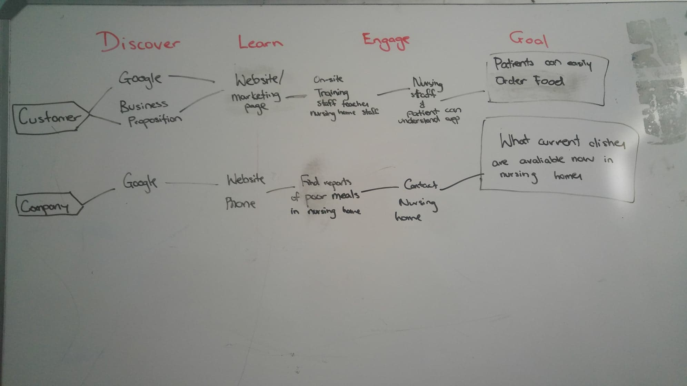

Overview
Problem
Did you know that elderlies living in aged care facilities are served food that do not have enough nutrients and truly disgusting meals everyday? Today, there are still many nursing homes who serve store-bought garlic bread, a hot dog and tomato sauce for dinner. In today's society, this is not acceptable and elderly people in nursing homes should be able to receive a well-fed meal.
Background
Tastie is a mobile application that aged care facilities can use for elderly to easily select their daily meals. Additionally, patients can also request a new dish and input any dietary information that must be known to nurses and chefs. A voice is given to the patients by implementing a voting system to vote for the new dishes to be added to the menu.
Audience
It is targeted towards elderly patients living in nursing facilities to help with their daily activities in selecting meal. In particular, elderly patients who are not satisfied with their current food that is provided to them.
Role
UI Designer, UX Designer
Feature One: Selecting Meals
The users are first presented with the different meals that can be ordered from and the corresponding day of the week so if necessary, the users can plan their meal ahead of time and select their meals. The users name will be displayed at the top of the application and prompt them with a question asking what the users would like to eat.
A list of available dishes and drinks are shown for the selected meal. The most popular dish is listed first to let the users know which dish is selected by the majority of the users.
Feature Two: Ordering Meals
A more detailed content is shown when the user clicks into a certain dish. A button to add the dish to the order is displayed underneath the content of the dish. After adding a dish to the order, a popup window to prompt the user if they want to continue ordering more dishes or confirm the meal is presented.
Feature Three: Requesting Meals
To request a new dish to be added to the menu, the user must complete the necessary form of to be able to send the request.
An extended version of the Design Sprint was implemented throughout the development of Tastie. Since this project was an university assessment piece, the process of the real Design Sprint could not be simulated. Instead, each day of the sprint was extended to a weekly process so the first week is mapping, sketch on the second week, decided and storyboard on the third week and so on.
Map
I created a map to understand the system and product that will be produced so that an overall alignment is known throughout the process. The focus goal was to design an application where the elderly patients can easily use the app to order food without needed any assistance from the staff.
Sketch
For week 2, I created a final concept sketch of the home, list of dishes and detailed dish interfaces. Even though this was an individual piece and understood the design of the application, creating the three sketch concept helped me solidify the idea and the process of the application.
Decide & Storyboard
Before developing the storyboard, I completed the User Test Flow exercise to help identify a simple storyline for the flow of events that the user would experience. The User Test Flow helped create what screen came next after the previous action which reduced any confusion that may have happened in the process. The storyboard consist of eight screen where the user would begin from the login/sign up page and accomplish the task of ordering bacon and eggs from the breakfast menu.
Prototype
See the complete prototype done on Figma here.
Test
After the completion of the prototype, I conducted four usability tests. My goals were to:
In summary, based on the feedback given there were improvements that needed to be done in terms of increasing the size of the font and allowing for a more detailed response when personalising their dietary information. The usability and flow of the pages were well-understood and had experienced the ease of navigating through the application completing the two designated tasks. Considering the results of the A/B test, many users liked the current colour scheme of red. From the results of the survey,all users were interested in Tastie, they found value and purpose of an application like this. Majority of the users found that they were in control of the application but it can be improved on.
Overall, Tastie was a fun project to complete as a UI/UX designer to improve on my design and decision skills during the development of a product. This course also helped me learn all about the process of design sprints and how to use it to produce fast and good products. This was my first experience with design sprint and I loved it. I can't wait to be able to experience the design sprint in a real industry project.
{kind=link}
{kind=link}
{kind=link}
{kind=link}
{kind=link}
{kind=link}